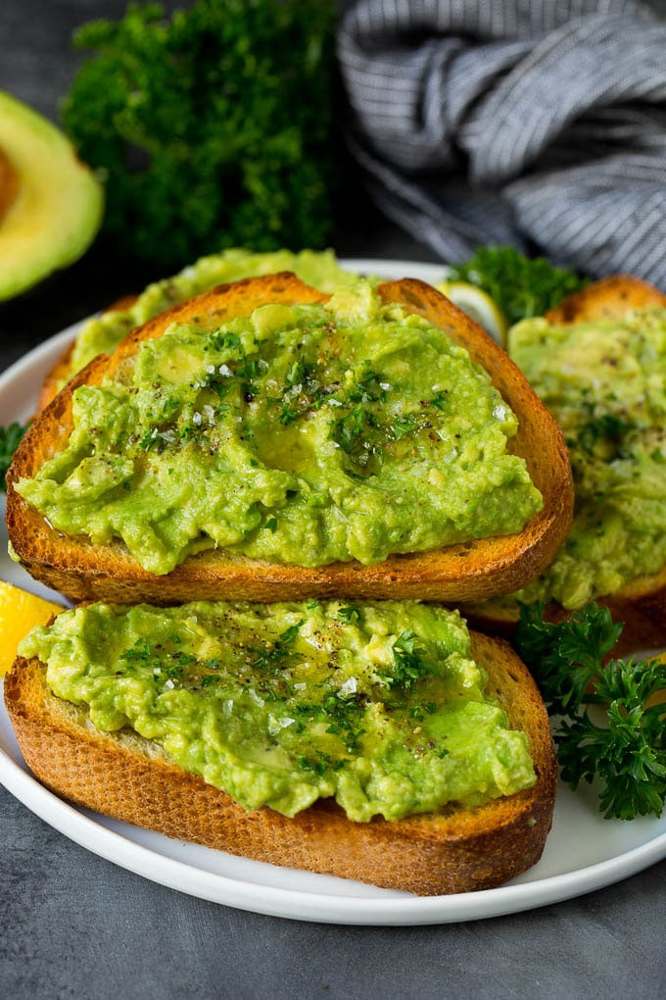

Avacado Toast

Description
Creamy avacado mash on top of perfectly crrusted bread.
Ingredients
- 2 Avacados
- Sliced French Bread
- 2 Tbsp. Butter
- Red Pepper Flakes
- 1 lemon
- salt and pepper (to taste)
Recipe
- Peel and mash avacodas. Add juice of lemon. Salt and pepper to taste.
- Add butter to pan on medium hight heat. Toast 4 minutes or until golden brown. Flip and toast an additional 2 minutes.
- Add mash to top of toast and spread corner to corner.
- Top with red pepper flakes, lemon juice and enjoy!